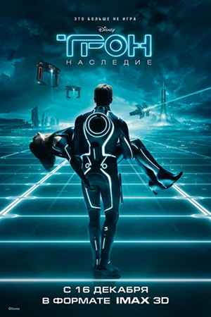

Трон: Наследие (2010)
Сэм Флинн, технически одарённый 27-летний сын Кевина Флинна, начинает расследовать исчезновение своего отца и оказывается втянутым в тот же мир жестоких программ и гладиаторских игр, в котором его отец жил на протяжении 20 лет. Вместе с помощницей Кевина отец и сын пускаются в рискованное путешествие за жизнью по поражающей взгляд кибер-вселенной, которая стала ещё более совершенной и чрезвычайно опасной.
- Оригинальное название: Tron: Legacy
- Год: 2010
- Страна: США
- Категории: Фильм / Фантастика / Боевик
- Режиссёр: Джозеф Косински
- Актёры: Джефф Бриджес / Гаррет Хедлунд / Оливия Уайлд